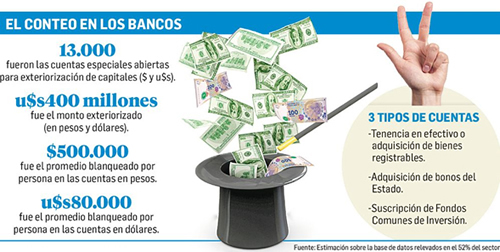

Real Chubut - Agencia de Noticias


Toma ritmo el blanqueo: ya se abrieron unas 13.000 cuentas

LOS BANCOS CAPTARON U$S 400 M, A UN MES DE QUE SE CUMPLA EL PLAZO PARA EXTERIORIZAR EL EFECTIVO - El monto promedio por persona, según fuentes del sistema, se ubica en u$s80.000 para las cuentas en dólares y en $550.000 para las que son en pesos. Esperan un flujo importante sobre el final de octubre.
Falta casi un mes. Y lo más importante se jugará, dicen, en los últimos días. Pero ya en el conteo que hacen los bancos en estos días el blanqueo de capitales empieza a tomar algo de ritmo: los argentinos ya abrieron alrededor de 13.000 "cuentas especiales" en todo el sistema financiero, con el propósito de sincerar los dólares o pesos que tenían en su poder y sin declarar.
La cifra surge de una estimación elaborada sobre la base de datos revelados a Ámbito Financiero por siete bancos que representan el 55% de todo el sector. El movimiento es, por ahora, incipiente. La verdadera novedad de esta semana está en que empieza a notarse un primer goteo de efectivo sobre las cuentas ya abiertas. El monto captado hasta ahora apenas redondea los u$s400 millones (tanto en moneda local como extranjera). Pero en las entidades descuentan que prácticamente todos los clientes que decidieron realizar la apertura de una de estas "cuentas especiales" terminarán por repatriar dinero.
El blanqueo promedio por persona y en efectivo, según precisaron en algunas entidades, se ubicó en estas semanas entre los u$s80.000 y los u$s100.000 para las cuentas en dólares; y cercano a los $550.000 para las que son en pesos.
Desde un banco se esforzaron en aclarar ayer a este diario que hubo un cambio de actitud en el sector después de que las asociaciones que nuclean a las entidades privadas se reunieran en el Banco Central. El pedido en ese encuentro a los representantes de cada banco fue que replicaran el modelo del Nación para el tratamiento de los "blanqueadores": abrir la cuenta a pedido de cada cliente, tomar el depósito en efectivo y, luego, exigir la documentación y la declaración jurada. Hasta entonces, la mayoría de los bancos exigía estos justificativos como un trámite previo y necesario para iniciar la operación.
El plazo para exteriorizar el "dinero negro", siempre y cuando sea en efectivo, se cumple el próximo 31 de octubre. El Banco Central habilitó para esto la cuenta especial que deben abrir las entidades a pedido de cualquier contribuyente. Una vez que son declarados, los dólares o pesos depositados quedan inmovilizados por seis meses: en una cuenta a la vista o en un plazo fijo; o invertido en bonos soberanos, provinciales o corporativos; o colocados en un fondo común de inversión ligado a actividades inmobiliaria o agropecuaria. Si el monto supera los $ 800.000, el blanqueador debe pagar una penalidad del 10%; si se ubica entre los $305.000 y los $ 800.000, una del 5%; y si es menor a los $305.000, no debe afrontar ningún costo.
Ayer, el presidente del Banco Nación, Carlos Melconian, se mostró entusiasmado porque, según dijo, ya se ven señales positivas sobre el blanqueo: "Hay muchas cuentas abiertas. Lo que más se ve es exteriorización de afuera, donde lo único que se paga es la penalidad. Se está armando. Vamos bien", comentó, durante su exposición en un seminario organizado por Bank Magazine, en la Bolsa de Comercio.
Minutos más tarde, en ese mismo escenario, el presidente de HSBC Argentina, Gabriel Martino, reflejó el mismo optimismo: "El blanqueo se juega en el último minuto. Los últimos 15 días de octubre van a ser importantes para la repatriación del efectivo. Y diciembre también va a ser importante para el resto de la exteriorización. No hay que mirar la foto sino la película, que es positiva", dijo.